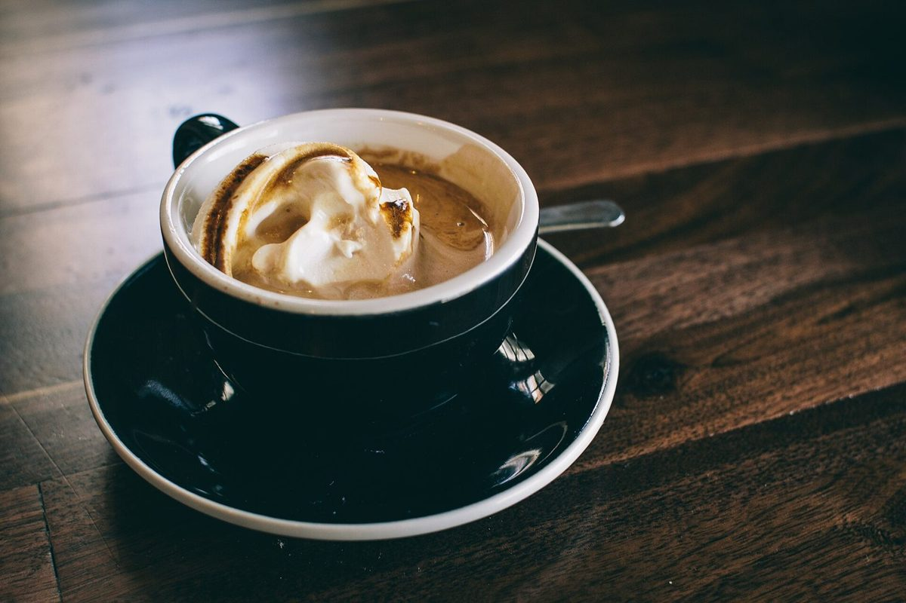
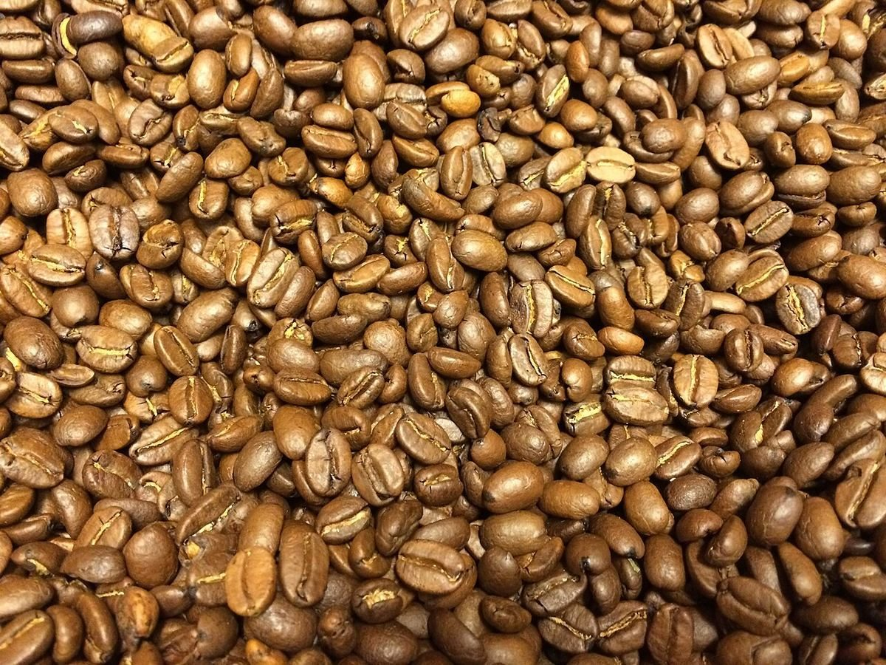

メニュー
メニュー
お店のメニュー・価格は準備中です。確認でき次第、ここに掲載します。
下の選択ボタンは制作側の連想による飾りで、お店の提供内容を示すものではありません。
ボタン1準備中
ボタン2準備中
ボタン3準備中
写真(イメージ)
コーヒーのイメージ写真
国外・撮影地不明のフリー素材です。お店の商品の写真ではありません。





メニュー
お店のメニュー・価格は準備中です。確認でき次第、ここに掲載します。
下の選択ボタンは制作側の連想による飾りで、お店の提供内容を示すものではありません。
写真(イメージ)
国外・撮影地不明のフリー素材です。お店の商品の写真ではありません。

